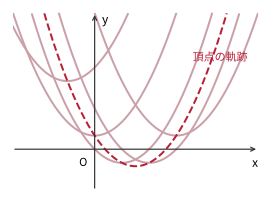

ホーム ＞ 数学I ＞ 2次関数のグラフ
\(a\) が実数全体を動くとき、放物線 \(y=x^2-2ax+2a^2-3a+1\) の頂点の軌跡を求めよ。
平方完成して頂点を \(a\) を含む座標 \((X,\ Y)\) で表す。\(X=\ldots\)、\(Y=\ldots\) から \(a\) を消去して、\(X\) と \(Y\) の関係式を作る。それが頂点が描く図形の方程式。
頂点の座標は \((a,\ a^2-3a+1)\)。
①より \(a=X\)。②に代入する。

\(a\) は実数全体を動くので \(X=a\) も実数全体。制限はない。
【答案（テストに書く形）】
答